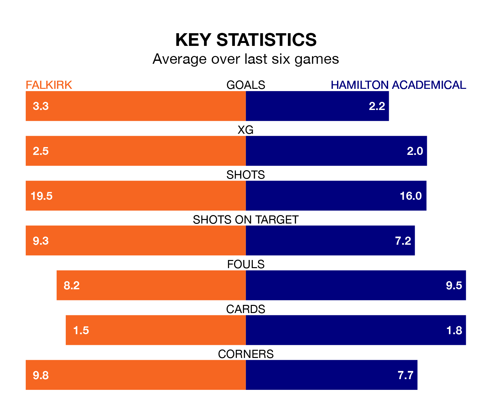

Falkirk host Hamilton Academical in Saturday's match at the Falkirk Community Stadium looking to bounce back from defeat last time out in League One.
The Bairns, who sit top of the league after 22 games, fell to a 0-5 away defeat to Alloa Athletic on January 27.
They face a Hamilton Academical side who also lost their last match, a 3-2 defeat to Annan Athletic, and who sit second in the table.
With 56 goals in 22 games so far this season, Falkirk are the league's highest scorers with 2.5 goals per game. And they are conceding fewer than average, letting in 13 goals at a rate of 0.6 per game.
Hamilton Academical are also above average scorers, with 2.1 goals per game, compared to a league average of 1.5. They have conceded 0.7 goals per game.
With Sam Long between the sticks, the Bairns can rely on one of the league's safest pair of hands. He has kept eight clean sheets in his 13 appearances this season, and no 'keeper has prevented the opposition scoring more often in League One.
In the Accies's net, Jamie Smith has six clean sheets in 12 games. He has conceded a goal every 115 minutes, 30% more often than the 146 minutes between goals for Long.
The home team are in fantastic form in League One, with five wins and a draw from their last six games.
With three wins and two draws over that period, the visitors' form is worse – they have taken 11 points from 18, compared to Falkirk's 16.
In the last three years, Falkirk and Hamilton Academical have played each other on three occasions. They won one each, and they drew once.
Their last meeting was on December 16, when Falkirk won 3-1 away.
Updated: 12:06 (UTC), 15/02/24